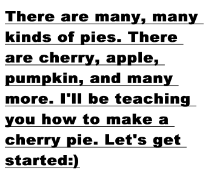
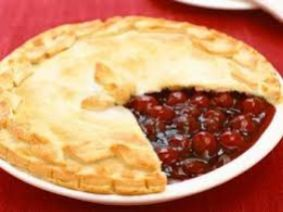

INGREDIENTS:
1 prepared pastry for a 2-crust pie (not baked)
2 14.5-ounce cans LUCKY LEAF® Red Tart Pitted Cherries
1 cup sugar
3 Tablespoons corn starch
1 Tablespoon butter or margarine
3 drops red food coloring, if desired

DIRECTIONS:
Preheat oven to 425°F.
Drain cherries, reserving 1-cup liquid. Mix sugar and corn starch in a small heavy saucepan. Gradually stir in reserved liquid until smooth.
Cook and stir over medium heat until mixture bubbles. Cook 1 minute more until thick and clear. Remove from heat.
Stir in butter, cherries and food coloring. Pour into prepared crust. Cover with vented or lattice top crust.
Bake at 425°F for 10 minutes. Reduce heat to 350°F and bake 25-35 minutes until golden brown.